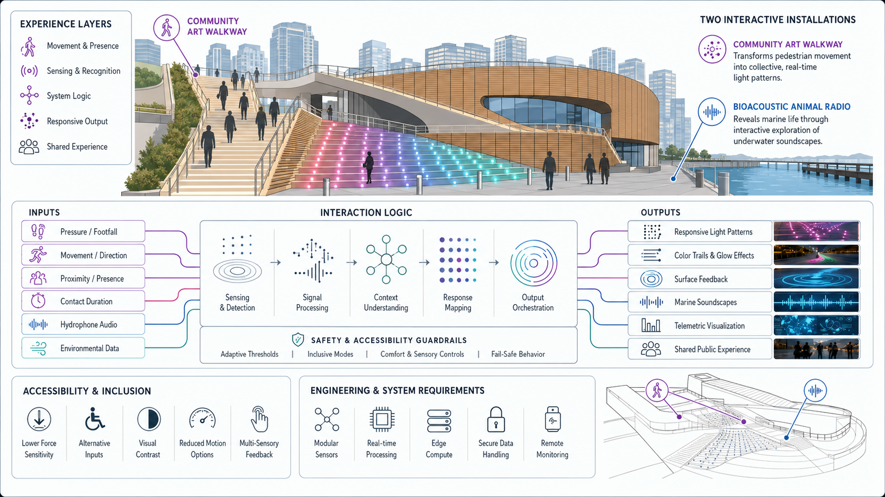
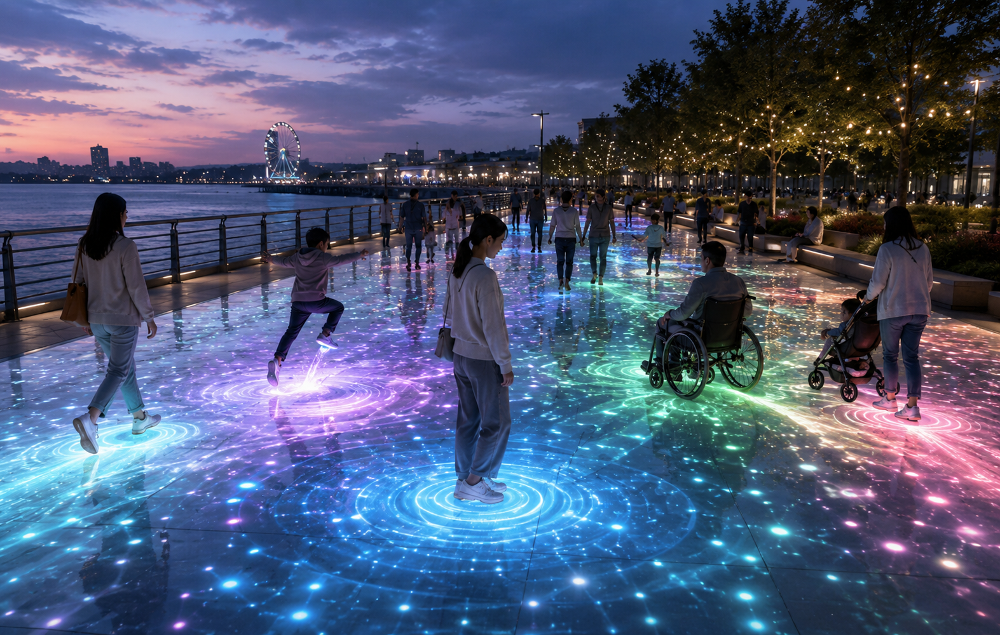
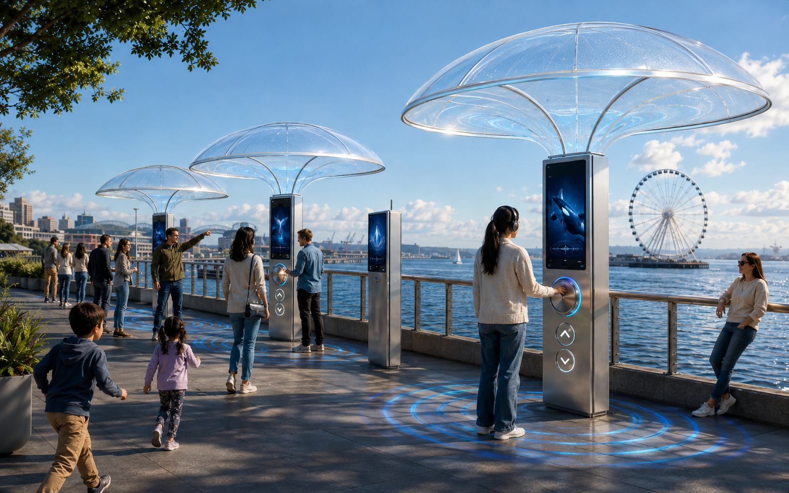

Designing for the Seattle Waterfront
Two public installations for the Overlook Walk and the piers — a pressure-responsive light walkway and a bioacoustic marine radio — designed to break the promenade's linear flow and turn passing through into moments of pause.

The waterfront promenade is scenic but passive and linear — people move through it without pausing, and its experience is almost entirely visual. How might we create points of pause and richer, multisensory engagement?
Two installations under one essence: a Community Art Walkway that turns footsteps into collective light, and a Bioacoustic Animal Radio that lets people tune into the hidden marine life of Puget Sound.
From site observation to storyboards, experience maps, and fully specified inputs and outputs — then lo-fi prototypes tested live, each interaction designed with accessibility adaptations from the start.
A scenic promenade that people walk straight past
The Seattle Waterfront is a gathering place for families, friends, and visitors — drawn together by the views and the public space. The park promenade was established to put the community first, yet its experience is predominantly visual and its flow strictly linear.
"Vibrant public art, inviting gathering areas, recreational opportunities, and dynamic cultural programming — creating a destination that truly puts the community first."
We started by observing the site as it is today. The waterfront offers a highly scenic experience, but almost everything it asks of a visitor is passive observation. The sensory experience is overwhelmingly visual — there was a clear opening to introduce auditory elements like soundscapes, and participatory moments that engage people beyond simply looking.
Two priorities emerged, and they pulled in slightly different directions. We had to preserve the scenic view that draws people here in the first place, while also fostering a sense of community among the strangers who share the space. That tension shaped everything that followed.
- Preserve the scenic view — incorporate more auditory elements rather than visual clutter.
- Foster a sense of community — introduce participatory, interactive moments.
How might we disrupt the linear promenade flow to create points of pause and interaction between visitors?
How might we enrich the waterfront's multi-sensory engagement so visitors can immerse themselves in the moment?
Immersion in the communal essence of Seattle — leaning into "community" by encouraging moments of pause.
Two installations, one essence
Both concepts answer the same brief from opposite ends of the sensory spectrum — one turns the crowd into a shared visual artwork, the other turns the ocean into something you can hear.
A pressure-responsive walkway surface embedded into the Overlook Walk that transforms pedestrian movement into a living, collective artwork. As visitors walk, pause, and gather, the ground beneath them becomes a canvas of light — revealing the rhythm and presence of the community in real time.
An interactive audio installation at the waterfront piers that reveals the rich but often unnoticed marine life of Puget Sound. Under an acoustic dome, visitors turn a dial to tune between species — hearing live hydrophone streams or archived recordings of orcas, humpbacks, sea lions, and more.
Connecting to the city. Binds the pedestrians and artists who share the promenade. Primarily engages the visual senses — moments of passive, collective creation in society.
Connecting to the ocean. Binds visitors to the marine-life community of Puget Sound. Primarily engages the auditory senses — moments of intentional absorption in nature.


Pulse & trail
Footsteps bloom into colour that expands from the point of contact and fades outward.
Live waveform
A telemetry screen turns the current vocalization into a shifting waveform and species card.
Acoustic dome
A transparent dome on a pillar localizes the soundscape and shelters each listener.
Every gesture, specified as an input and an output
We wrote a full interaction specification for both installations — mapping each active or ambient input to its output, with recognition parameters, adaptations, and alternative outputs designed so nobody is left out.
Every input and output carries adaptations — for low vision, visual sensitivity, colour-blindness, limited mobility, and hearing differences — written alongside the interaction, not bolted on after.
Lo-fi enough to fake it, real enough to learn
We built quick prototypes for both concepts — one projected and Wizard-of-Oz triggered, one made of cardboard and a Lego figure — and watched how people actually reacted.
- Built the visuals in p5.js — colourful shapes and rippling water.
- Projected them onto the floor for people to step onto.
- A teammate manually fired the trigger with a clicker whenever someone stepped on, demonstrating the response live.
- Handmade cardboard structure standing in for the chime and dome installation.
- A folded-paper radio with a thumb-tack dial to mimic tuning.
- A Lego figure puppeteered on a chopstick to walk through the interaction.
Users immediately began playing with the installation without any prompting — the interaction read as an invitation on its own.
Flashing visuals need real care, particularly for people with epilepsy. Visuals should fade in slowly rather than appearing abruptly.
The strongest inspiration came from art already living in the environment — leaning on existing Seattle art made the walkway feel of the place.
These findings became the "avoid flashing, slow fade, high-contrast" alternative outputs written into every walkway module.
The concept landed as genuinely cool overall — the promise of hearing hidden marine life resonated right away.
The dome caused initial confusion and felt disconnected from the chimes — the relationship between the parts wasn't legible.
The dome should ideally fit more than one person at a time so the experience can be shared, not gatekept.
A hologram element for engagement — later formalized as the holographic projection output. Chimes sit low enough not to be a hazard.
Who could this exclude, and how could it fail?
For each concept we asked what values it optimizes for, who it might leave out, and how it could be misused — because a public installation belongs to everyone who has to share it.
Brings light to the work of local artists and joins strangers into collaborative art. Benefits mobile, non-visually-impaired visitors and local artists.
- May exclude: people with visual impairments or low mobility; artists whose aesthetics don't fit an interactive walkway; people who feel afraid or embarrassed to be seen interacting.
- Misuse: crowd congestion; weather that makes the floor slippery; the surface cracking under sustained pressure.
Optimizes for an emotional connection to wildlife. Benefits marine-ecosystem advocacy, education groups, and curious visitors.
- May exclude: people with hearing or visual impairments; people with physical limitations such as wheelchair users if clearance is poor.
- Misuse: visitors hogging the pod and refusing to leave; the experience pulling people out of the present; the system misidentifying an animal.
An installation meant to create shared pause can just as easily create a queue — designing for community means designing for the moments it gets crowded.
What we'd carry into the build
Legibility beats novelty
The radio's dome was the most novel idea and the most confusing one. When parts of an installation don't visibly relate, people hesitate — the connection between dome, dial, and chime has to be readable at a glance.
Specs make accessibility real
Writing recognition parameters, adaptations, and alternative outputs for every input and output forced accessibility to be concrete — thresholds, fade times, and haptic cues instead of good intentions.
Borrow from the place
Our best aesthetic decisions came from what already exists on the waterfront — Seattle's art and its marine life. Designing of the place, not just for it, made both concepts feel like they belonged.
The waterfront doesn't need more to look at — it needs a reason to stop, and a way for strangers to notice they're sharing the moment.
- 01 Site observations — Overlook Walk & the Seattle Waterfront piers.
- 02 Storyboards & experience maps (FigJam) for both installations.
- 03 Interaction Specifications — inputs, outputs & systems, with adaptations and alternative outputs per module.
- 04 Lo-fi prototypes — p5.js projection (walkway); cardboard dome, folded-paper radio & Lego walkthrough (radio).
- 05 Seattle Waterfront park promenade vision statement (project brief material).
- 06 AI usage — used for grammatical cleanup and image generation.
HCDE 536 · INTERACTION DESIGN & PROTOTYPING · JUNE 2026
THE FURIOUS FIVE — CHRISTOPHER JONES · J.P. NGUYEN · RACHIT SINGHI · SU MIN KIM · TULASI ELANGOVAN